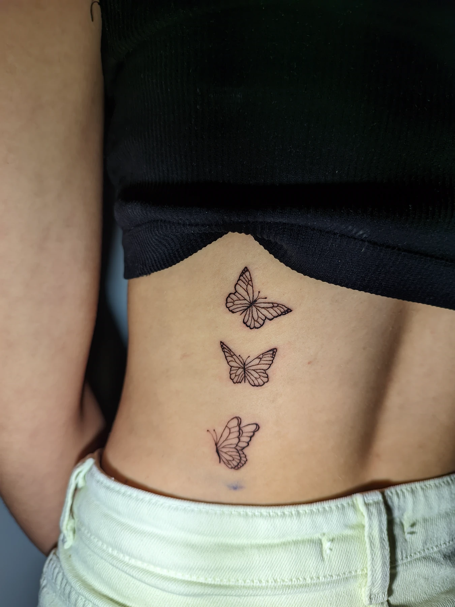
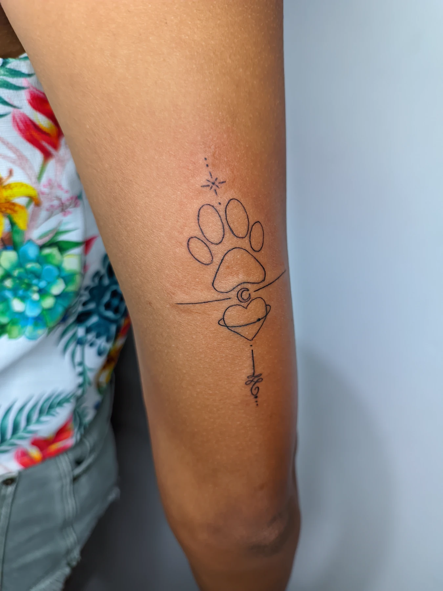

Início › Artigos › Primeira tattoo
Primeira tattooPrimeira tatuagem: o que saber antes de marcar
Dor, lugar, tamanho, preço, escolha do tatuador e o dia da sessão — tudo o que costuma travar quem vai fazer a primeira.

- Pra começar: antebraço externo, braço, coxa externa ou panturrilha.
- Tamanho certo vale mais que desenho pequeno demais.
- Escolha o tatuador pelo portfólio no seu estilo e pela biossegurança, não pelo menor preço.
- No dia: coma, durma bem, sem álcool na véspera.
Fazer a primeira tatuagem é um momento especial — e cheio de perguntas. Dói muito? Onde fica melhor? Quanto custa? E se eu me arrepender? Este guia junta as respostas que eu mais dou pra quem está chegando pela primeira vez.
Vai doer?
Sim, mas quase sempre menos do que a pessoa imagina. A sensação lembra um arranhão quente e contínuo. A intensidade muda muito com a região: antebraço, coxa e braço são tranquilos; costela, pé, joelho e pescoço são bem mais intensos. Tem o ranking completo em quanto dói fazer tatuagem.
Onde fazer a primeira
Pra primeira, eu recomendo antebraço externo, braço (parte de fora), coxa externa ou panturrilha. São regiões com músculo por baixo, pele mais firme e espaço pro desenho.
Além da dor, pense em duas coisas:
- Visibilidade. Você quer ver a tatuagem todo dia ou prefere algo que a roupa cubra? Vale pensar no seu trabalho também.
- Rotina de cicatrização. Mão e pé, por exemplo, sofrem com atrito e água o tempo todo.
Qual tamanho escolher
O erro mais comum da primeira tatuagem é o desenho pequeno demais pra quantidade de detalhe. Com os anos a tinta se espalha um pouco na pele, e o que era delicado vira um borrão. Frase longa em letra minúscula e rosto do tamanho de uma moeda são os casos clássicos.
Um bom tatuador vai te dizer o tamanho mínimo pra sua ideia continuar bonita. Às vezes a solução é aumentar um pouco; às vezes é tirar elementos.


Peças pequenas funcionam bem quando o desenho é simples o bastante pro tamanho.
Ainda escolhendo tamanho e lugar? Manda a ideia no WhatsApp — eu te ajudo a achar o tamanho que deixa ela bonita. Mandar minha ideia →
O desenho precisa ter significado?
Não. Tem gente que tatua uma homenagem cheia de história e gente que escolhe algo só porque achou bonito — os dois motivos valem. O que importa é você se sentir bem com a decisão.
E não precisa ter uma ideia original. Traz a referência que você salvou no Pinterest ou no Instagram: eu adapto pro seu corpo, no tamanho e na posição certos.
Como escolher o tatuador
- Portfólio no estilo que você quer. Traço fino, realismo e anime pedem habilidades diferentes.
- Trabalhos no mesmo tema que você quer — animal, retrato, frase, flores.
- Avaliações de outros clientes, no Google ou no Instagram.
- Biossegurança: agulha descartável aberta na sua frente, luvas, superfícies protegidas.
- Paciência pra responder suas dúvidas antes de marcar.
Separei as perguntas que valem a pena fazer em o que perguntar ao tatuador antes de marcar.
Cuidado com o preço muito abaixo do normal. Tatuagem mal feita costuma sair cara depois — em cobertura, reforma ou remoção a laser.
Quanto custa
O valor depende do tamanho, da região do corpo e da quantidade de detalhe. Por isso nenhum tatuador sério passa preço sem ver a ideia. Comigo, os trabalhos começam em R$ 120: você manda a referência, o tamanho aproximado e o local pelo WhatsApp, e eu passo o orçamento. A data fica confirmada com sinal.
Quem precisa conversar antes
Algumas situações pedem atenção antes de marcar:
- Menor de 18 anos: precisa de autorização do responsável. Fala comigo antes.
- Gravidez ou amamentação.
- Diabetes, problemas de coagulação ou uso de remédio que afina o sangue.
- Doença de pele na região, ou histórico de queloide.
- Tratamentos que baixam a imunidade.
Nesses casos, converse com seu médico e me avise. Não é pra te assustar — é pra sessão e a cicatrização correrem bem.
Como se preparar pro dia
- Durma bem na noite anterior.
- Coma uma refeição de verdade antes. Queda de pressão é comum em quem vem nervoso e de estômago vazio.
- Nada de álcool nas 24 horas anteriores: aumenta o sangramento.
- Roupa confortável que deixe a região acessível.
- Pele sem queimadura de sol, machucado ou irritação no local.
Na hora: o stencil
Antes de qualquer agulha, o desenho é transferido pra sua pele com um decalque, o stencil. É o momento de olhar no espelho e ver posição e tamanho no seu corpo. Se algo não te convencer, fala — dá pra ajustar. Nunca tatue sob pressão.
E depois?
A cicatrização é metade do resultado. Você sai do estúdio com as orientações, e o passo a passo está em como cuidar da tatuagem nos primeiros 15 dias.
E se eu me arrepender?
A remoção a laser existe, mas é cara, leva várias sessões e costuma doer mais que tatuar. Outra saída é a cobertura, que transforma a tatuagem antiga numa peça nova. Ainda assim, o melhor caminho é decidir sem pressa: dormir com a ideia, ver o stencil no corpo e só seguir quando tiver certeza.